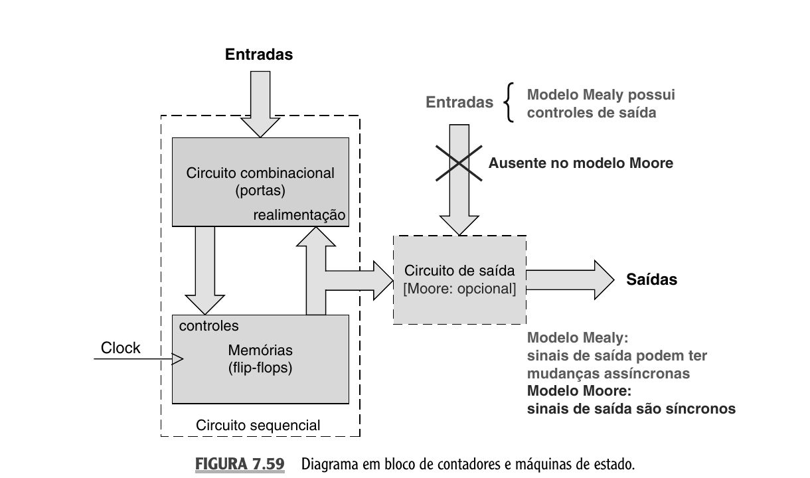
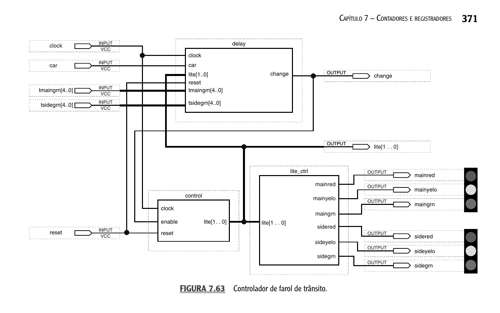

Professor: Gabriel Soares Baptista
Na aula anterior, estudamos contadores síncronos e assíncronos, registradores de deslocamento e contadores por deslocamento.
Hoje generalizamos esse comportamento:
Base: Seção 7.14 de Sistemas Digitais: Princípios e Aplicações (Tocci, Widmer, Moss).
Uma máquina de estados finitos é um circuito sequencial que percorre um conjunto finito de estados sob o controle de um clock. As transições entre estados e os valores das saídas são funções determinísticas do estado atual e, possivelmente, das entradas externas.
$$ \text{estado atual, entradas} \xrightarrow{\text{clock, lógica combinacional}} \text{próximo estado, saídas} $$
O foco da aula é a análise de FSMs a partir de diagramas de estados, e a síntese a partir de uma especificação.
Um contador percorre uma sequência numérica regular.
Uma máquina de estado é o nome genérico para qualquer circuito sequencial que percorre um conjunto predeterminado de estados sob o controle de um clock.
Um contador em anel de quatro bits percorre a sequência $1000 \to 0100 \to 0010 \to 0001 \to 1000$. Esse circuito deve ser chamado de contador ou de máquina de estado?
A distinção é apenas de uso, e não de natureza do circuito.
Exemplos clássicos de máquina de estado:
A Figura 7.59 apresenta o diagrama em bloco genérico de um circuito sequencial, aplicável a contadores e a máquinas de estado.

Três blocos fundamentais: circuito combinacional, flip-flops e, opcionalmente, circuito de saída.
No modelo Moore, as saídas são funções exclusivas do estado atual dos flip-flops.
$$ \Lambda(t) = f\bigl(Q(t)\bigr) $$
Símbolos da equação:
Não há caminho direto entre as entradas externas e o circuito de saída. Como o estado só se altera nas bordas ativas do clock, todas as saídas Moore são completamente síncronas em relação ao clock.
No modelo Mealy, as saídas são funções do estado atual e das entradas externas.
$$ \Lambda(t) = f\bigl(Q(t), X(t)\bigr) $$
Os símbolos $t$, $Q(t)$, $X(t)$, $\Lambda(t)$ e $f$ mantêm o mesmo significado do modelo Moore. A diferença é que $X(t)$ aparece como segundo argumento de $f$, o que reflete a dependência direta entre entradas externas e saídas.
Há um caminho combinacional direto entre as entradas e o circuito de saída. As saídas Mealy podem mudar assincronamente em resposta a variações nas entradas, exigindo cuidado com hazards e temporização.
| Característica | Moore | Mealy |
|---|---|---|
| Saídas em função de | estado atual | estado atual e entradas |
| Caminho entrada → saída direto | não | sim |
| Comportamento temporal das saídas | síncrono | potencialmente assíncrono |
| Complexidade do estado | geralmente maior | geralmente menor |
| Robustez a hazards | maior | menor |
O diagrama de estados é a representação gráfica do comportamento de uma FSM.
entrada/saída (Mealy) ou entrada (Moore)A direção da seta indica o sentido do avanço do sistema após a próxima borda de clock.
Quatro estados nomeados, quatro entradas externas (start, full, timesup, dry).
idle: ociosa até o botão de iníciofill: enche o tanque até o nível completoagitate: movimenta o agitador até o temporizadorspin: gira o tambor até a água ser eliminadaO diagrama é convertido mecanicamente em uma tabela de transição de estados (ATUAL/PRÓXIMO).
Cada linha: (estado atual, entradas) → (próximo estado, saídas).
$$ \begin{array}{c|cc|cc} \text{Estado atual} & \text{Entradas} & \text{Próximo estado} & \text{Saídas} \\ \hline \text{idle} & \text{start}=1 & \text{fill} & 0 \\ \text{idle} & \text{start}=0 & \text{idle} & 0 \\ \text{fill} & \text{full}=1 & \text{agitate} & 0 \\ \text{fill} & \text{full}=0 & \text{fill} & 0 \\ \text{agitate} & \text{timesup}=1 & \text{spin} & 0 \\ \text{agitate} & \text{timesup}=0 & \text{agitate} & 0 \\ \text{spin} & \text{dry}=1 & \text{idle} & 0 \\ \text{spin} & \text{dry}=0 & \text{spin} & 0 \\ \end{array} $$
A tabela guarda a mesma informação do diagrama, em forma adequada à síntese algébrica.
A síntese de uma FSM segue seis etapas sistemáticas.
Esquecer de tratar os estados não utilizados. Se a codificação usou $N$ bits mas apenas $M < 2^N$ estados são acessíveis, os estados restantes devem ser declarados como don't care ou ter comportamento definido.
A tabela de excitação resume, para cada flip-flop, qual deve ser o valor das entradas de controle para a transição desejada.
$$ \begin{array}{c|c|c|c|c} Q & Q^+ & D & J & K \\ \hline 0 & 0 & 0 & 0 & d \\ 0 & 1 & 1 & 1 & d \\ 1 & 0 & 0 & d & 1 \\ 1 & 1 & 1 & d & 0 \\ \end{array} $$
Para flip-flops D, a excitação é trivial: $D = Q^+$.
A escolha entre D e J-K é, em geral, uma questão de contexto. Em projetos com portas discretas, J-K tende a produzir expressões mais simples. Em projetos com PLDs, D é mais conveniente.
Aplica-se o procedimento a um problema clássico: produzir saída $Z = 1$ sempre que os dois últimos bits observados na entrada $X$ formam o padrão "11".
Três estados bastam para registrar a história relevante:
Modelo: Mealy.
A saída $Z$ aparece no rótulo da aresta, confirmando o modelo Mealy.
Para $M = 3$ estados, são necessários $N = 2$ flip-flops.
$$ \begin{array}{c|cc} \text{Estado} & Q_1 & Q_0 \\ \hline S_0 & 0 & 0 \\ S_1 & 0 & 1 \\ S_2 & 1 & 0 \\ \end{array} $$
O estado $(Q_1, Q_0) = (1, 1)$ é não utilizado e será tratado como don't care na síntese.
$$ \begin{array}{cc|c|cc|c} Q_1 & Q_0 & X & Q_1^+ & Q_0^+ & Z \\ \hline 0 & 0 & 0 & 0 & 0 & 0 \\ 0 & 0 & 1 & 0 & 1 & 0 \\ 0 & 1 & 0 & 0 & 0 & 0 \\ 0 & 1 & 1 & 1 & 0 & 1 \\ 1 & 0 & 0 & 0 & 0 & 0 \\ 1 & 0 & 1 & 0 & 1 & 0 \\ 1 & 1 & 0 & d & d & d \\ 1 & 1 & 1 & d & d & d \\ \end{array} $$
A partir desta tabela, os mapas de Karnaugh produzem as expressões de excitação e de saída.
Para flip-flops D ($D_i = Q_i^+$), os mapas de Karnaugh produzem:
$$ D_1 = Q_0 \cdot X $$
$$ D_0 = X $$
$$ Z = Q_1 $$
A expressão de $D_0$ mostra que o bit menos significativo do estado é uma réplica da entrada $X$. A expressão de $D_1$ mostra que a detecção ocorre exatamente quando $Q_0 = 1$ e $X = 1$, ou seja, quando dois "1"s consecutivos foram observados.
A análise é o problema inverso da síntese.
Dado o circuito (ou a tabela ATUAL/PRÓXIMO), pede-se o diagrama de estados, a descrição verbal e a classificação do modelo.
A síntese parte de uma especificação de alto nível e produz um circuito. A análise parte de um circuito e produz uma especificação de alto nível. As duas operações são complementares: nenhuma síntese é confiável sem uma etapa posterior de análise que verifique a correspondência com a especificação original.
Tabela ATUAL/PRÓXIMO estado com dois flip-flops, entrada $X$:
$$ \begin{array}{cc|cc} Q_1 & Q_0 & X & Q_1^+ Q_0^+ \\ \hline 0 & 0 & 0 & 0\ \ 1 \\ 0 & 0 & 1 & 1\ \ 0 \\ 0 & 1 & 0 & 0\ \ 1 \\ 0 & 1 & 1 & 1\ \ 1 \\ 1 & 0 & 0 & 1\ \ 0 \\ 1 & 0 & 1 & 0\ \ 0 \\ 1 & 1 & 0 & 1\ \ 1 \\ 1 & 1 & 1 & 0\ \ 0 \\ \end{array} $$
Os quatro estados $S_0 = 00$, $S_1 = 01$, $S_2 = 10$, $S_3 = 11$ são todos acessíveis. Modelo: Mealy.
O sistema conta o número de "1"s consecutivos recebidos em binário módulo 4. Um "0" mantém o sistema no estado atual.
O caso $S_3$ é um caso particular:
Esse comportamento evidencia por que a análise tabelar é tão útil: ela torna visível um padrão que a especificação verbal esconderia. A reconstrução do diagrama força a explicitar todas as transições.
Vários circuitos estudados nas aulas anteriores são casos particulares de FSMs.
A formalização por meio de FSMs é especialmente útil em problemas de controle.
A Figura 7.63 ilustra a decomposição modular típica de um controlador de semáforo modelado como FSM.

A Figura 7.63 particiona o sistema em três blocos funcionais.
delay: temporizador que conta ciclos de clock e gera o sinal changecontrol: máquina de estado com os quatro estados das luzeslite_ctrl: decodificador que aciona as seis lâmpadas, duas por viaO bloco control é a FSM cujo diagrama de estados o engenheiro precisa construir. A entrada enable conectada a change indica um acoplamento Mealy, pois a transição depende de um sinal (change) que é função do estado atual do bloco delay realimentado pela contagem de clocks.
$$ \begin{array}{c|c|c} \text{Característica} & \text{Moore} & \text{Mealy} \\ \hline \text{Saídas} & f(Q) & f(Q, X) \\ \text{Número de estados} & \text{possivelmente maior} & \text{possivelmente menor} \\ \text{Sincronismo das saídas} & \text{síncronas} & \text{parcialmente assíncronas} \\ \text{Sensibilidade a hazards} & \text{baixa} & \text{alta} \\ \text{Modelo canônico} & \text{contador síncrono puro} & \text{detector de sequência} \\ \end{array} $$
Em uma FSM, todo circuito sequencial com um número finito de estados internos pode ser descrito por uma única estrutura: estado atual, entradas, próximo estado, saídas.
O diagrama de estados torna essa estrutura visível.
A síntese produz o circuito a partir da especificação. A análise recupera a especificação a partir do circuito. As duas operações são complementares.
Nesta aula, introduzimos o conceito e a formalização de máquinas de estados finitos, os modelos Mealy e Moore, o diagrama de estados, a tabela de transição e o procedimento completo de síntese.
Próxima etapa: